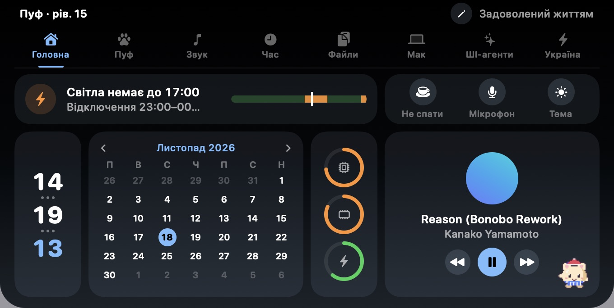
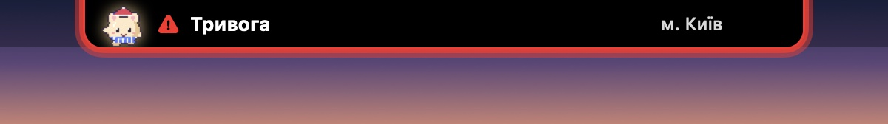
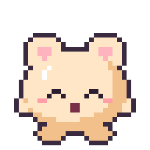
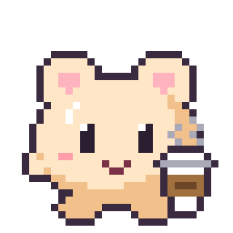
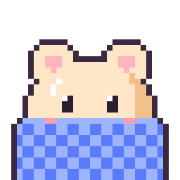
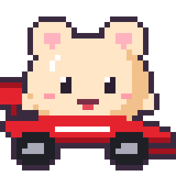
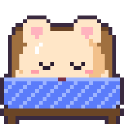
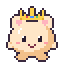
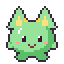
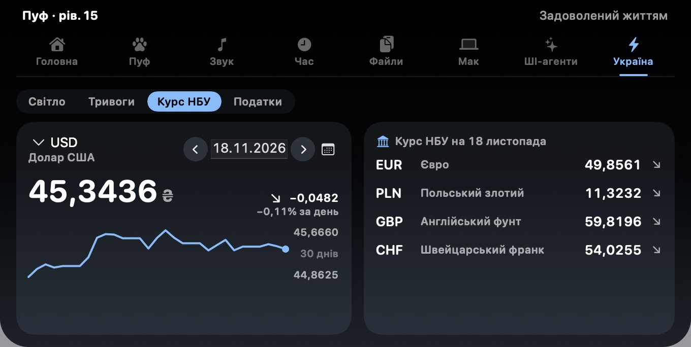

Головна з блоків
Світло, швидкі кнопки, годинник, календар, стан Мака, музика — збери головну сам. Кожен блок буває маленьким, широким, високим або великим.


Острів біля вирізу Мака, на якому живе Пуф. Наведи мишку на чубчик — і під рукою музика, таймер, календар, тривоги й графік світла.
Світло, швидкі кнопки, годинник, календар, стан Мака, музика — збери головну сам. Кожен блок буває маленьким, широким, високим або великим.
Біля вирізу живе Пуф, а поруч з’являється те, що відбувається зараз. Відкривати нічого не треба.

Повітряна тривогаОстрів пульсує червоним, Пуф ховається під ковдру. На відбій — зелений.Кожну можна ввімкнути або вимкнути в налаштуваннях Пуфа.
Виділи будь-що на екрані — картинку, відео, скан — і текст з нього одразу в буфері.
Скриншот потрапляє в буфер одразу, без п’ятисекундного прев’ю в кутку, і зберігається в історії.
Як у Windows: клікни по іконці програми, в якій працюєш, — вона згорнеться або сховається. Ще клік — повернеться.
Перемикач показує кожне вікно з картинкою, з усіх робочих столів і згорнуті. А при наведенні на іконку в Доці — вікна цієї програми.
Програми, пошук, калькулятор і курси валют в одному полі.
Колір з будь-якого місця екрана — в HEX у буфер. Картинку з буфера можна обрізати й підписати.
Посилання з Telegram чи Slack — у потрібний браузер або профіль Chrome: «Особистий», «Робочий».
⌘X і ⌘V у Finder переносять файли, як у Windows.
Програма не закриється від випадкового натискання.
Короткі скорочення розгортаються в повний текст, поки друкуєш: адреса, реквізити, шаблон листа.
Разом із налаштуваннями, кешем і рештками в Бібліотеці.
Клавіші яскравості керують зовнішнім монітором під мишкою. Bluetooth вимикається, поки Мак спить, а «Музика» не запускається сама.
П’ятнадцять блоків у чотирьох розмірах: від годинника до стану батареї.
Spotify і Музика, тексти пісень, окрема гучність для Zoom, браузера чи гри.
Лінійка-таймер, найближча зустріч з календарів Google, Outlook чи iCloud, годинник світу.
Історія буфера обміну, полиця, куди кидаєш файли на потім, і швидкі нотатки.
Перемикач вікон з усіх робочих столів, пристрої, живлення, «не засинати» в один клік.
Острів підсвічується, коли агент закінчив роботу або чекає на тебе.
Він їсть, спить, ховається під ковдру під час тривоги, слухає музику разом з тобою і росте: сорок рівнів, досягнення й гардероб.
радіє
їсть слухає музику
слухає музику
тримає Мак без сну
ховається від тривоги Мак перегрівся
Мак перегрівся
у фокусі
спить
король чарівник
чарівник серфер
серфер панда
панда кіберпуф
кіберпуф єдиноріг
єдиноріг
дракон
Улюбленець, нотатки, буфер обміну й налаштування зберігаються лише на цьому Маку. Без реєстрації, статистики й реклами. В інтернет Пуф ходить тільки сюди:
Завантаж Puff-Island.dmg, відкрий і перетягни Пуфа в «Програми». Оновлення Пуф пропонує сам.
Завантажити для MacБез платної версії й підписок. Якщо Пуф тобі допомагає — можна задонатити.
Банка скоро з’явитьсяНапиши нам — або натисни «Повідомити про проблему» в налаштуваннях Пуфа.
dibslysupport@gmail.com